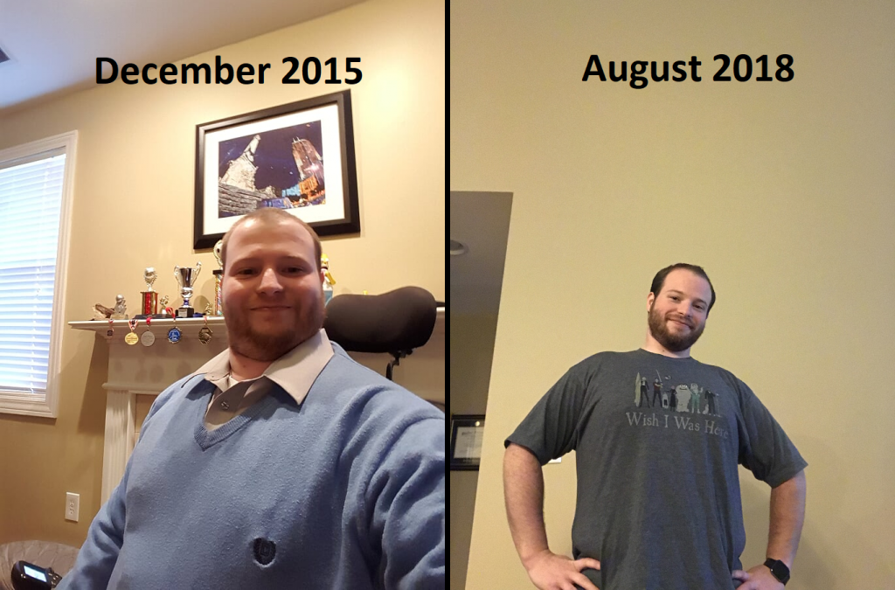

Life Update
This blog has been quite dead for a while now. Never fear I am still around! Life has been busy, work has been busy, and I took a step back from being on the computer 24x7.
I took a new job back in 2015, which lead me to believe I would have tons of free time - not the case, but not exactly a bad thing. Being out of consulting did free up a lot of my schedule and let me focus more on my social life and personal health. In-fact after settling into my new job (About 6 months!), I decided to put a significant focus on my weight. I had gotten up to 245-250 lbs. I had low energy, it was tough for me to do anything due to weight in combination with my Muscular Dystrophy and enough was enough. I started exercising using a manual chair around the house in late January of 2016 - I took a serious focus on my diet in early March of 2016. I am happy to say I am down to 185 lbs. Since December of last year, I have had a hard time losing weight, and I am going to be putting a big focus into dropping another 20 lbs.

Now that my health is in better shape, I am spending tons of time with friends and exercising semi-regularly. With the weight loss, I am not having nearly as much of an issue with my muscle weakness from my Muscular Dystrophy. I am even walking around the house/neighborhood and shopping some!
Last time I tried kick-starting this blog was with the HoloLens - it was a fun experience. Still, it quickly died off due to the learning curve to get into programming and trying to balance my health, social & work life. Keep in mind that this blog is entirely outside of my work life and tends to consume other parts of life so that I can dedicate some time to it.
I am not going to commit to regular updates on this blog. I do have some stuff I’ve been working on recently that I am going to be posting in the coming weeks. So please keep tuned to this blog!